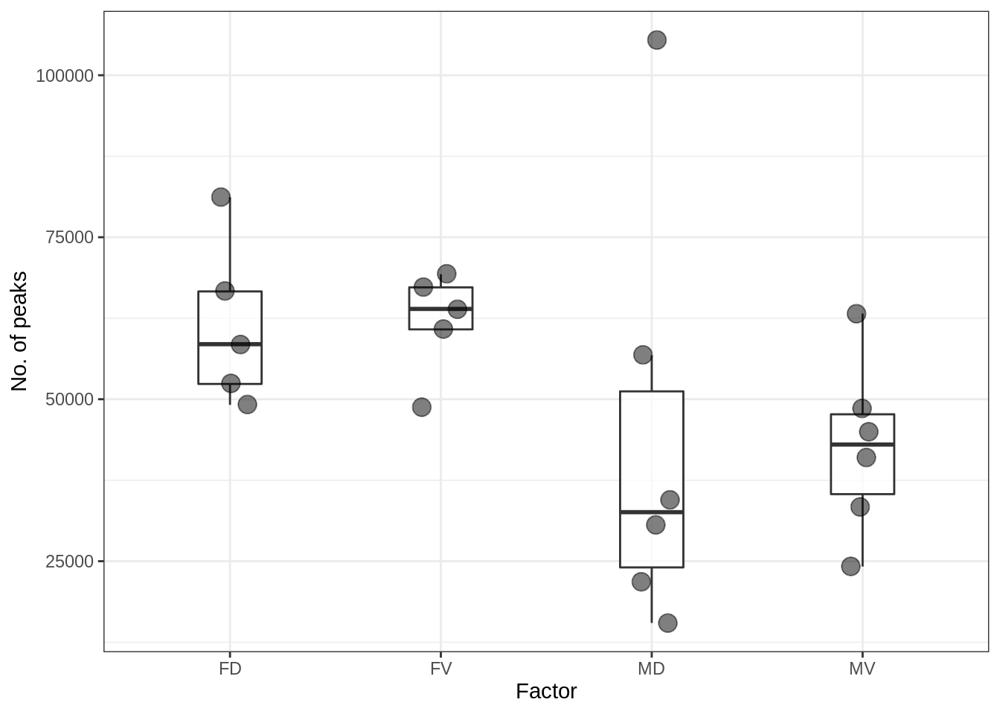
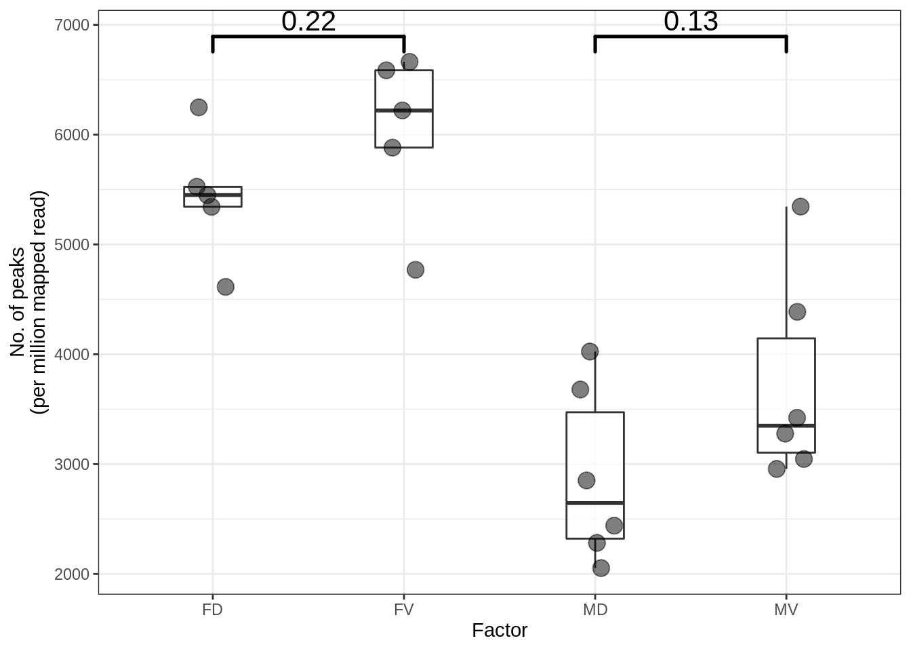
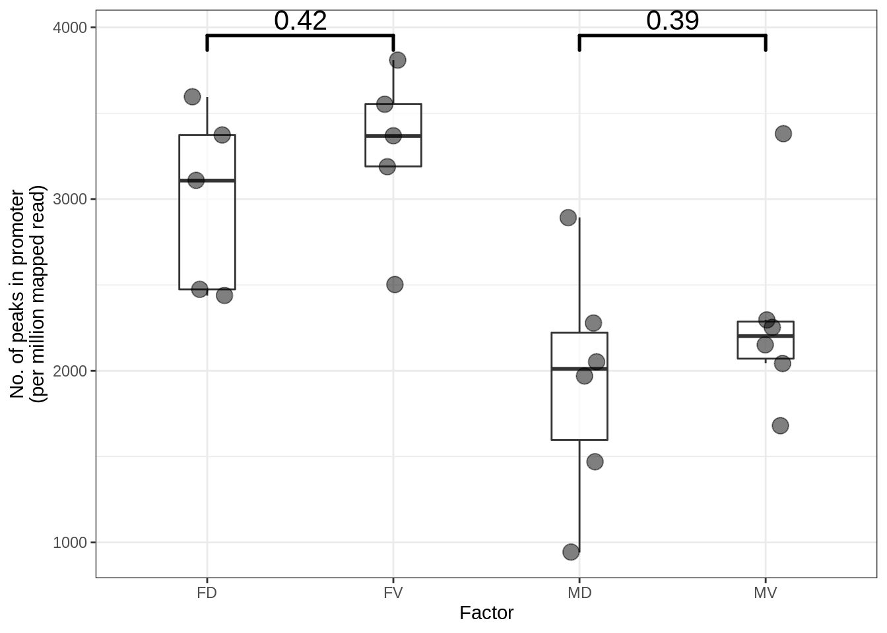
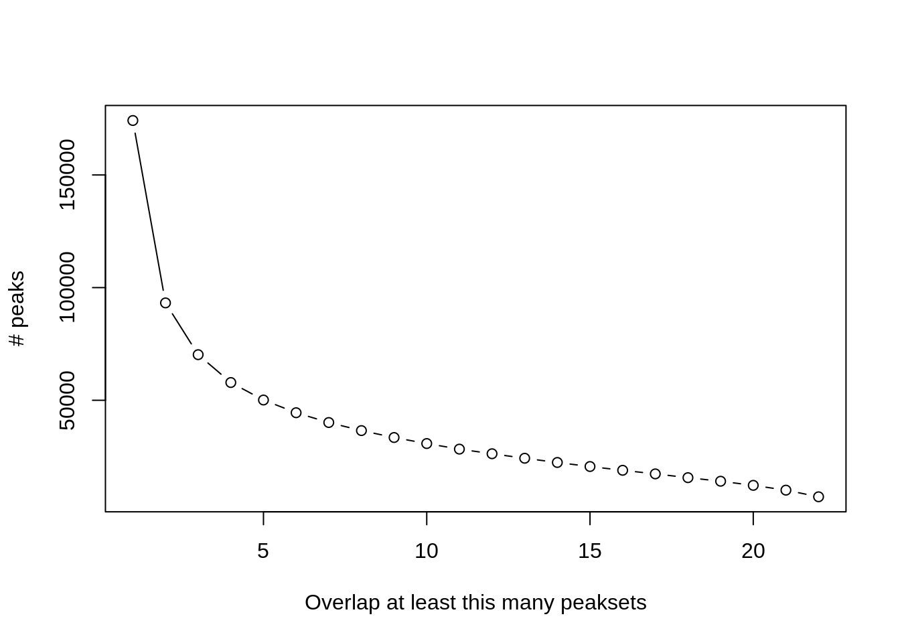
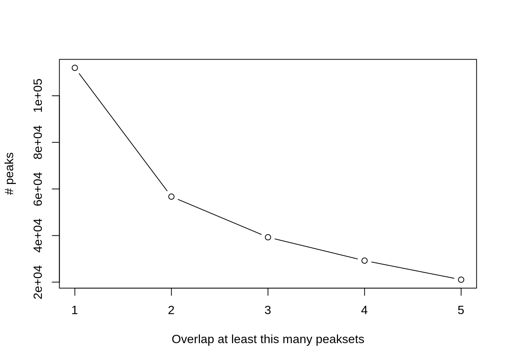
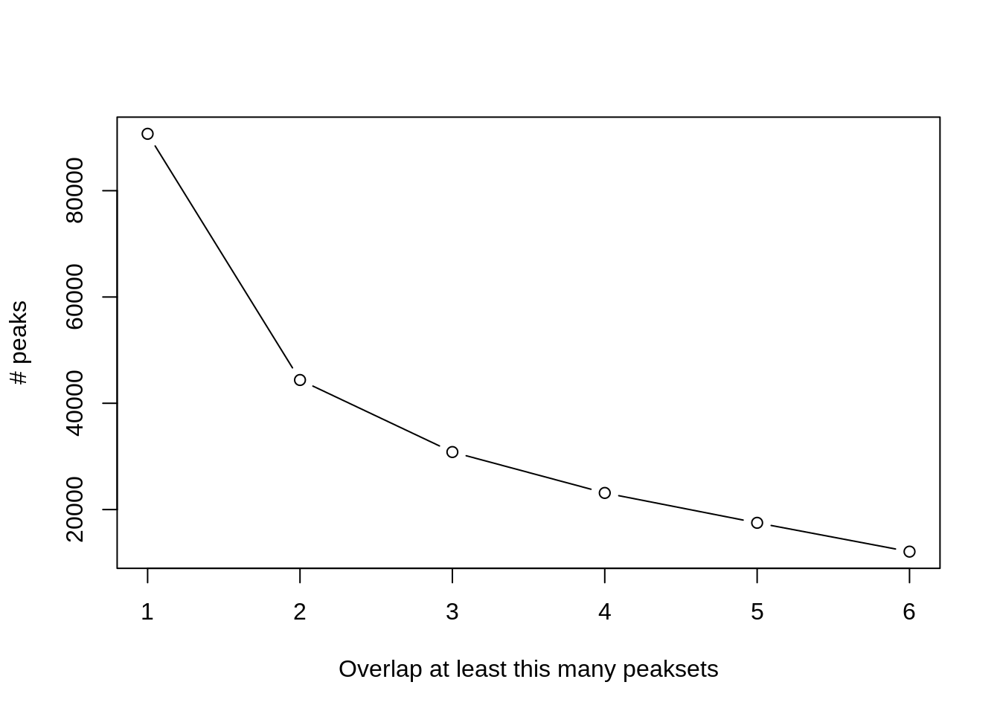
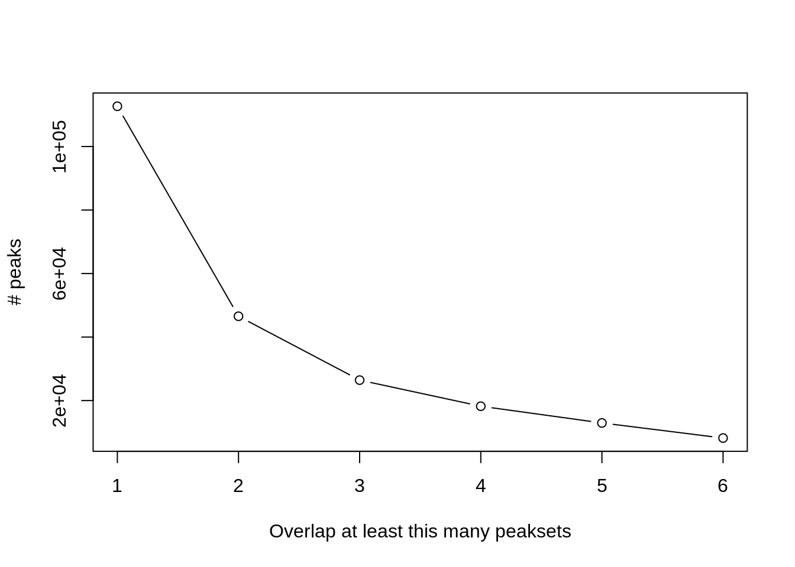
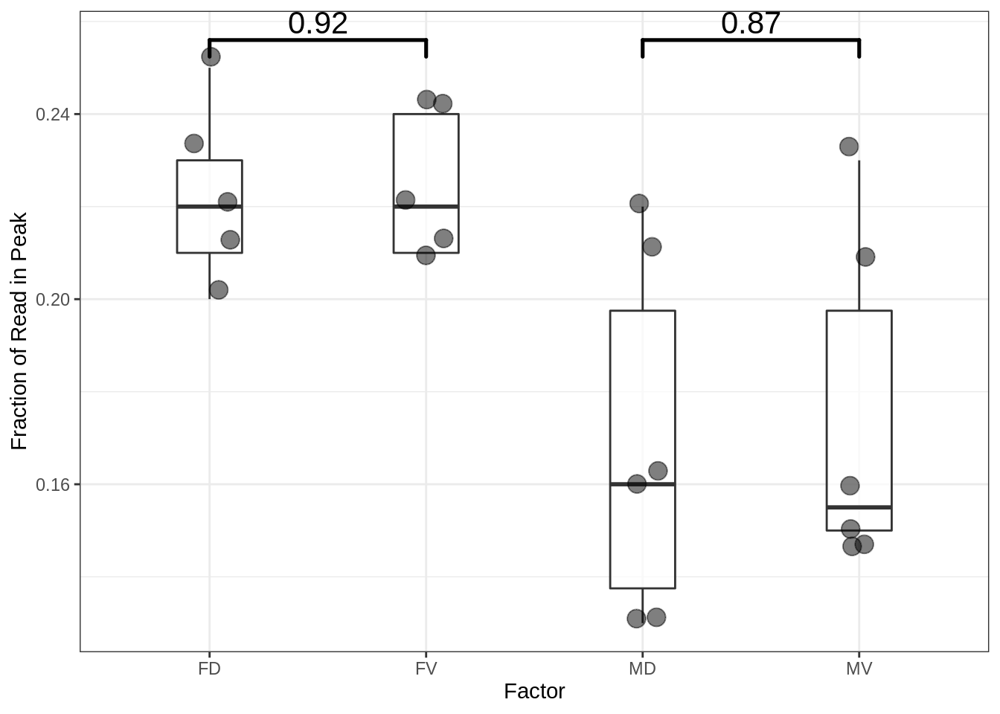
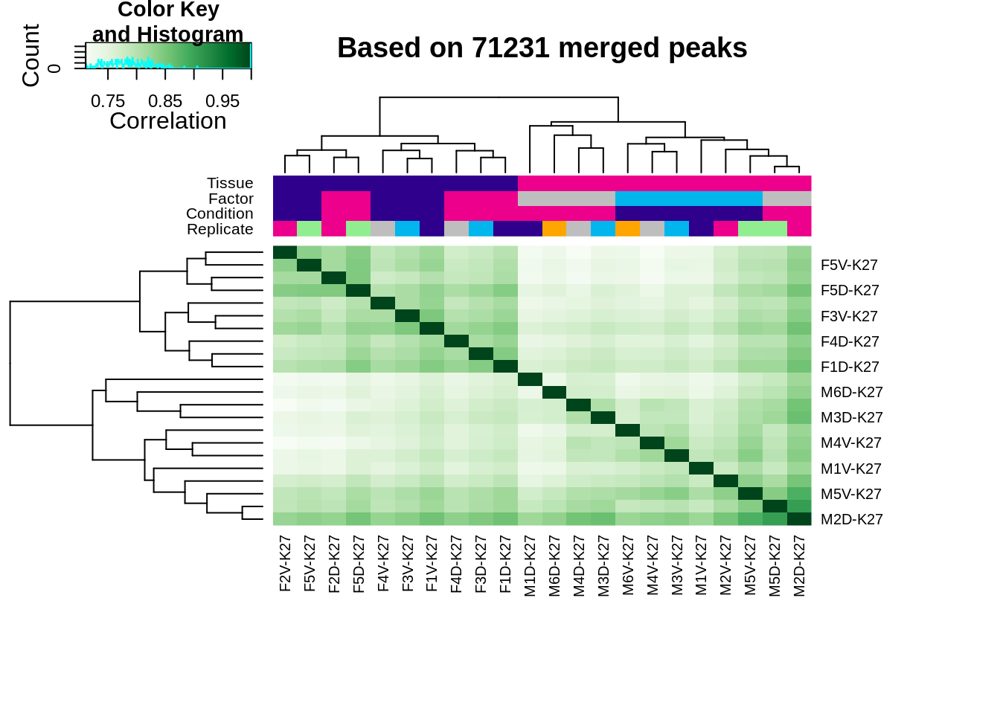
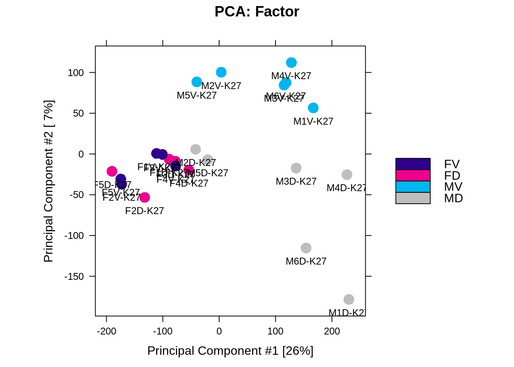

3 Peak Calling
Peak caller: MACS2
3.1 No. of peaks
| ID | Tissue | Factor | Condition | Replicate | Caller | Intervals |
|---|---|---|---|---|---|---|
| F1V-K27 | F | FV | V | 1 | macs | 69289 |
| F1D-K27 | F | FD | D | 1 | macs | 66633 |
| F2V-K27 | F | FV | V | 2 | macs | 60777 |
| F2D-K27 | F | FD | D | 2 | macs | 52358 |
| M1V-K27 | M | MV | V | 1 | macs | 24175 |
| M1D-K27 | M | MD | D | 1 | macs | 15481 |
| M2V-K27 | M | MV | V | 2 | macs | 41054 |
| M2D-K27 | M | MD | D | 2 | macs | 105362 |
| M3V-K27 | M | MV | V | 3 | macs | 48579 |
| M3D-K27 | M | MD | D | 3 | macs | 34548 |
| F3V-K27 | F | FV | V | 3 | macs | 63934 |
| F3D-K27 | F | FD | D | 3 | macs | 58491 |
| F4V-K27 | F | FV | V | 4 | macs | 48795 |
| F4D-K27 | F | FD | D | 4 | macs | 49133 |
| F5V-K27 | F | FV | V | 5 | macs | 67263 |
| F5D-K27 | F | FD | D | 5 | macs | 81164 |
| M4V-K27 | M | MV | V | 4 | macs | 44960 |
| M4D-K27 | M | MD | D | 4 | macs | 30593 |
| M5V-K27 | M | MV | V | 5 | macs | 63224 |
| M5D-K27 | M | MD | D | 5 | macs | 56767 |
| M6V-K27 | M | MV | V | 6 | macs | 33449 |
| M6D-K27 | M | MD | D | 6 | macs | 21862 |

Figure 3.1: No. of peaks

Figure 3.2: No. of peaks (per million mapped read)

Figure 3.3: No. of peak in the promoter regions
3.2 No. of peaks by the consensus level
3.2.1 All samples (n=22)
## [1] 174161 93213 70240 57883 50120 44477 40134 36551 33480 30802 28329 26277 24277 22403 20604 18931
## [17] 17336 15660 14077 12252 10119 7179

Figure 3.4: No of peaks by the consensus level
3.2.2 FV (n=5)
## [1] 109738 56752 40386 30640 22325Figure 3.5: No of peaks by the consensus level (FV)
3.2.3 FD (n=5)
## [1] 111990 56709 39275 29237 21059

Figure 3.6: No of peaks by the consensus level (FD)
3.2.4 MV (n=6)
## [1] 90705 44383 30827 23131 17509 12087

Figure 3.7: No of peaks by the consensus level (MV)
3.2.5 MD (n=6)
## [1] 112680 46549 26442 18218 12956 8196

Figure 3.8: No of peaks by the consensus level (MD)
3.3 Consensus peaks across factors of interests
- A peak should be supported by at least 2 samples within each of the factor group (e.g. FD, FV)
## [1] 109738 56752 40386 30640 22325- Final number of merged peaks: 71231
- This number of peaks were used for differential binding region analysis (DBR)
3.4 Fraction of Read in Peaks (FRiP)
- The proportion of reads that overlap a peak in the consensus peakset.
- It can be used to indicate which samples show more enrichment overall. 
3.5 Heatmap

Figure 3.9: Heatmap based on the affinity matrix (aka. count-table)
3.6 PCA

Figure 3.10: PCA plot based on the affinity matrix (aka. count-table)